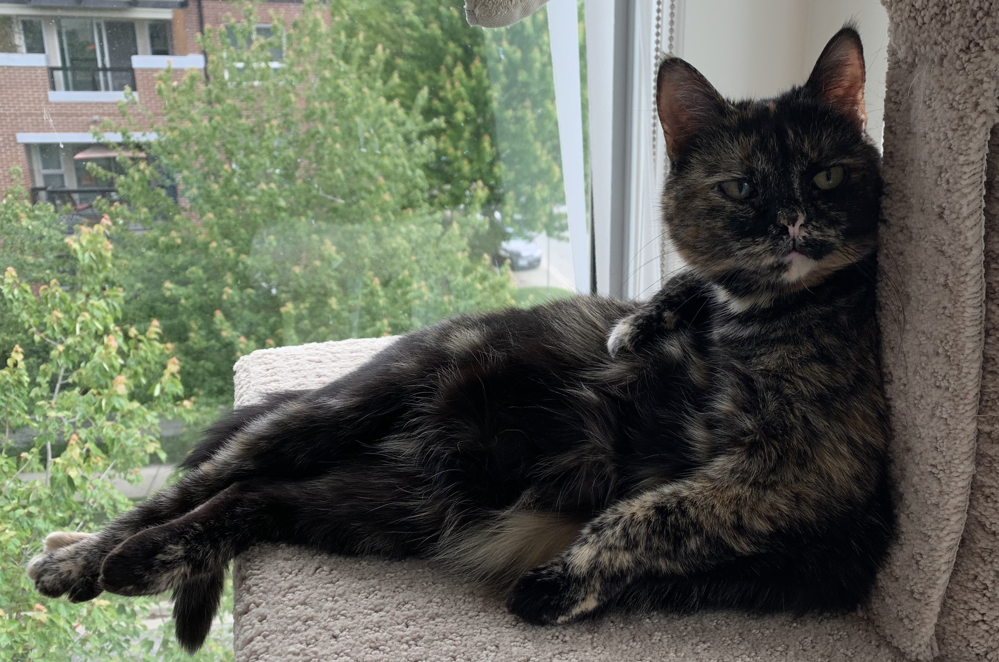
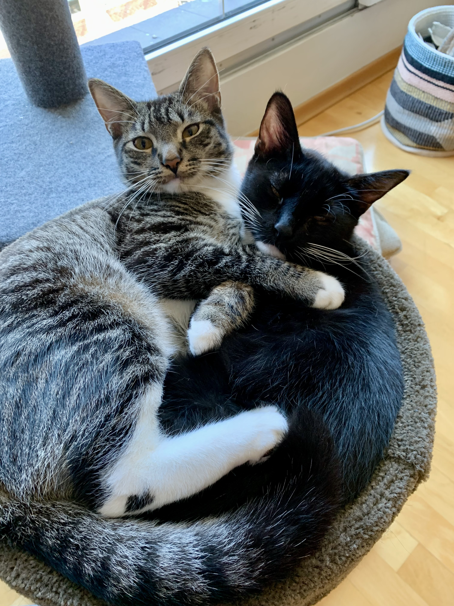

Links, resources and additional information
Infectious disease modelling work
- Delphi Research Group at Carnegie Mellon University
- BC COVID-19 Modelling Group
R packages for recent papers and publications
(See github/dajmcdon or my publications page for others)
{fkf}: Fast Kalman Filter. Very fast Kalman filtering and smoothing.{sparsegl}Sparse Group Lasso. Efficient implementation of sparse group lasso with optional bound constraints on the coefficients. It supports the use of a sparse design matrix as well as returning coefficient estimates in a sparse matrix. Furthermore, it correctly calculates the degrees of freedom to allow for information criteria rather than cross-validation with very large data. Finally, the interface to compiled code avoids unnecessary copies and allows for the use of long integers.{rtestim}Estimate the Effective Reproductive Number with Trend Filtering. The instantaneous reproduction number, \(R_t\), roughly says “how many new infections will result from each new infection today”. Values larger than 1 indicate that an epidemic is growing while those less than 1 indicate decline. This package uses Poisson likelihood and a trend filtering penalty (a type of regularized nonparametric regression), to impose smoothness in the estimate.{dpf}: Discrete particle filtering. This package greedily estimates switching Kalman filters fast. Also useful for analysis of musical tempos.{AIMER}: Amplified, Initially Marginal, Eigenvector Regression. As described in Ding, L. and McDonald, D.J., “Predicting phenotypes from microarrays using amplified, initially marginal, eigenvector regression”. A better version of supervised principal components analysis.{cplr}: Compressed penalized linear regression. As described in Homrighausen, D. and McDonald, D.J., “Compressed and penalized linear regression.”
Additional resources
- Advice for getting a job, somewhat out of date
- R Package Tricks
- Quarto presentation template
- LaTeX template for writing manuscripts
- Minimal make files
- Nice LaTeX tables
Resources for R and basic analysis
(see also my course materials on the Teaching page)
- R for Data Science, a nice textbook from Hadley Wickham
- Happy Git with R, good exposition on setting up and combining R and Git
- Basic text mining in R
- Fix common Github+R issues, the dreaded rpostback askpass error
- The batchtools package for easy cluster parallelization
Artwork and other attributions
The artwork throughout this website is generated using R and additional packages. In principle, it will change randomly whenever the site is updated. Some of these use the {aRtsy} package built by Koen Derks. Others use some custom functions that I occasionally work on in my spare time. These have benefited from reading Danielle Navarro’s excellent blog and other material, as well as some posts by Tyler Hobbs.
This website was built with Quarto along with some custom CSS inspired by the Hugo Apéro theme. Building the site in Quarto removes some flexibility that I used to have with my old Jekyll site, but it also allows for much easier integration of R code.
If any of this seems useful, see the underlying GitHub repo for the code. There are script files that control the artwork as well as autogenerating the list of publications (a massive headache in other static site generators).
Personal
I still play cello occasionally, both privately and with the Vancouver Philharmonic. And I enjoy listening to classical music whenever I get the chance. I’ve only once successfully connected research and music, but this leaves music to be a nice hobby, a total diversion from academic work.
I should also point to my partner’s website: Tamara Mitchell. She does great work in Hispanic literature, and we’re lucky to be at the same institution. We also have three(!!) wonderful cats that we spoil rotten.

